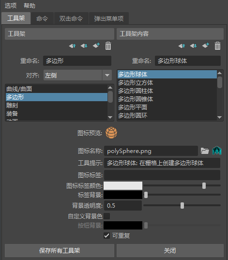

打开“工具架编辑器”(Shelf Editor)
- 在主菜单栏中：“窗口 > 设置/首选项 > 工具架编辑器”(Windows > Settings/Preferences > Shelf Editor)
- 单击工具架左侧的齿轮图标
 ，然后从显示的菜单中选择“工具架编辑器”(Shelf Editor)。
，然后从显示的菜单中选择“工具架编辑器”(Shelf Editor)。
- 右键单击工具架上的任何项目，然后选择“编辑”(Edit)或“编辑弹出菜单”(Edit Popup)。
通过工具架编辑器，可以创建和编辑工具架（希望组合在一起的工具和操作的集合）。（另请参见工具架。）

| 目标 | 操作 |
|---|---|
| 添加工具架 | 选择现有工具架旁边的 > “新建工具架”(New Shelf)。
|
| 重命名工具架 | 在工具架编辑器的“工具架”(Shelves)部分中，选择要编辑的工具架，然后在“重命名”(Rename)文本框中输入新名称。 |
| 重新排列工具架 | 在工具架编辑器的“工具架”(Shelves)部分中，选择要重新排列的工具架，然后单击 |
| 删除工具架 | 在工具架编辑器的“工具架”(Shelves)部分中，选择要移除的工具架，然后单击 |
| 导航工具架 | 使用工具架左侧的 齿轮菜单导航到上一个或下一个工具架；或者直接跳到另一个工具架。
|
| 向工具架添加工具、操作、菜单项或脚本 | 使用鼠标中键将菜单项或代码段拖动到工具架上。请参见向工具架添加工具、操作、菜单项或脚本。 |
| 显示或隐藏选项卡以简化界面 | 单击工具架左侧 齿轮菜单中的“工具架选项卡”(Shelf Tabs)条目，以切换“工具架选项卡”(Shelf Tabs)的显示。
|